Essential Tools can be used to create robust and high performance Web application interfaces using the following controls and components.
· EditorsPackage
· Google Suggest™-style Auto Complete
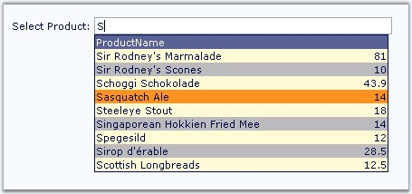
Figure 6
· Editor Controls
· CurrencyTextBox
· DateTimeTextBox
· DropDownCalendarTextBox
· GenericDropDown
· MaskedEditTextBox
· MultiColumnDropDown
· NumericTextBox
· PercentTextBox
· RichTextEditor

Figure 7
· SpellCheck
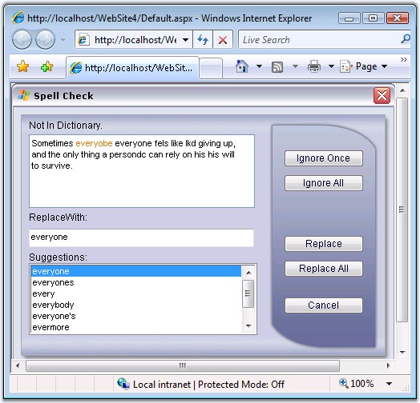
Figure 8
· GenericDropDown
GenericDropDown control acts as a host to display any kind of ASP.NET / Custom control embedded inside a dropdown.
Editing text at runtime
The text displayed in the generic textbox can be edited at run time.
Look and feel
The look and feel of the dropdown button can be altered with custom images and css definitions for the button and its hover state.
Relative positioning
The popup can be aligned relative to the textbox using the various alignment options available to specify the horizontal and vertical positioning of the popup.
Client side events
The GenericDropDown Control fires client side events for appropriate user actions to create highly responsive web pages with minimal postbacks.
Predefined styles
Predefined styles can be applied to the GenericDropDown control using the auto format options available for the same. CSS definitions can also be set for the drop down button and its hover state.
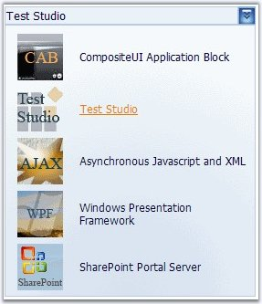
Figure 9
· MultiColumnDropDownCombo
MultiColumnDropDownCombo Control is used to display multiple columns of data in the drop down area. It can be bound to an external data source.
Selecting and Editing data
The selected data from the drop down can be displayed in the MultiColumnDropDown textbox, which can be edited at runtime.
Customizing display
The default Drop Down button image can be changed to display custom images. Also styles can be applied using the button css properties for normal and hover states.
Alignment options
Alignment options are available for the DropDown with respect to the textbox.
Sorting columns
Sorting can be enabled for individual columns and the data can be arranged accordingly, in the dropdown.
Display Headers and Footers
Headers and footers can also be displayed for the dropdown columns.
Client and Server side events
MultiColumnDropDownCombo Control comes with a number of client and server side events to make your pages faster and responsive.
Look and feel
MultiColumnDropDownCombo Control comes with a comprehensive collection of built-in skins to customize the appearance and settings of the control using css definitions.
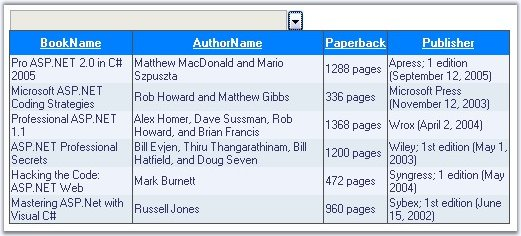
Figure 10
· Calendar
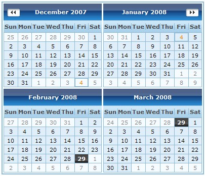
Figure 11
· Callback Package
· CallbackPanel
· CallbackMultiplexer
· Tree Package
· TreeView
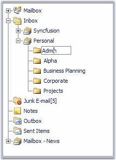
Figure 12
· Menu Package
· Menu
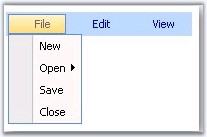
Figure 13
· ToolBar
Figure 14
· Tabs Package
· TabStrip
· MultiPage
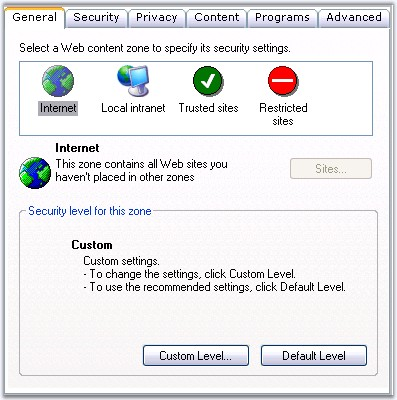
Figure 15
· Navigation Package
· GroupBar
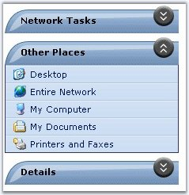
Figure 16
· Rotator
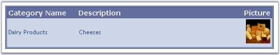
Figure 17
· Docking Package
· Snap
· Scheduler Package
· Scheduler
· Notification Package
· PopupControlContainer
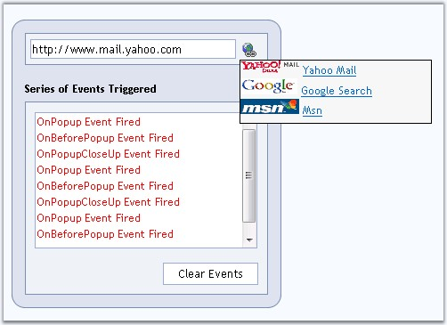
Figure 18
· UploadBox and UploadProgress
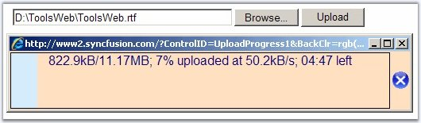
Figure 19
· WaitingPopup
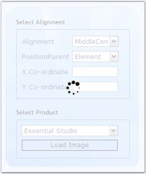
Figure 20
· ProgressBar
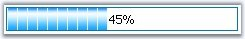
Figure 21
· Window
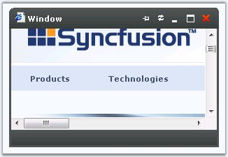
Figure 22
Users can use the Callback Panel to AJAX-enable any page and control.